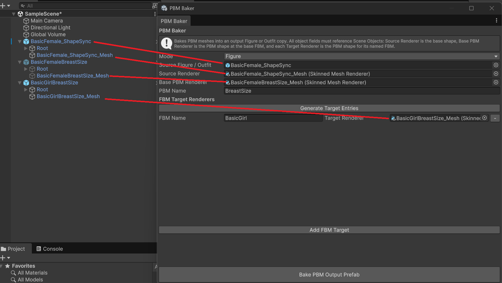
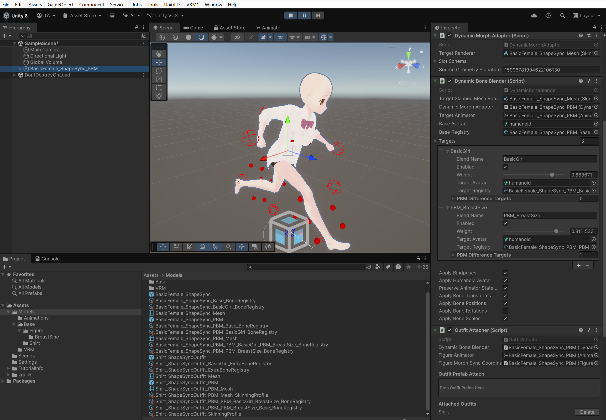
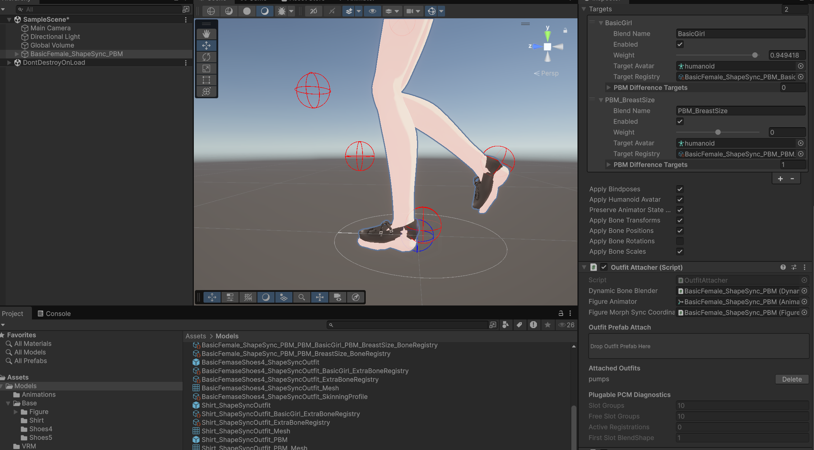
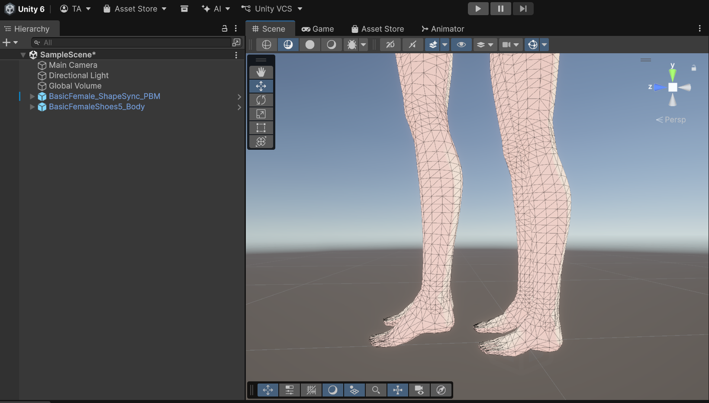
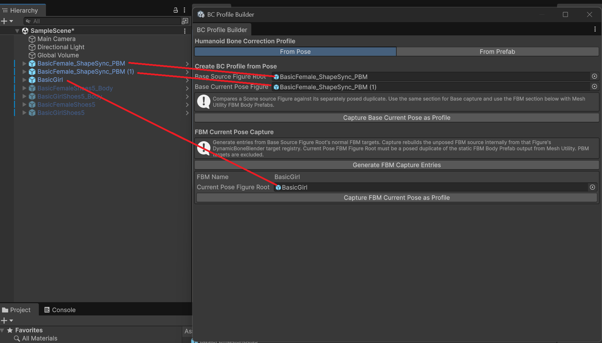
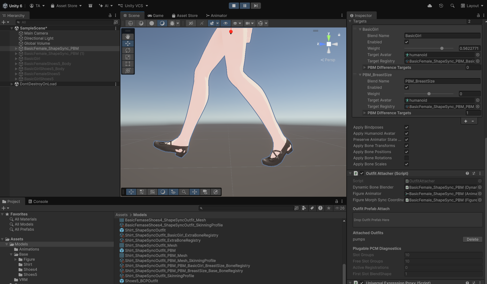
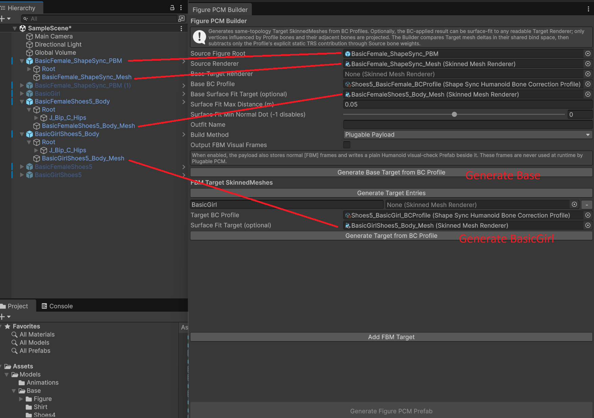
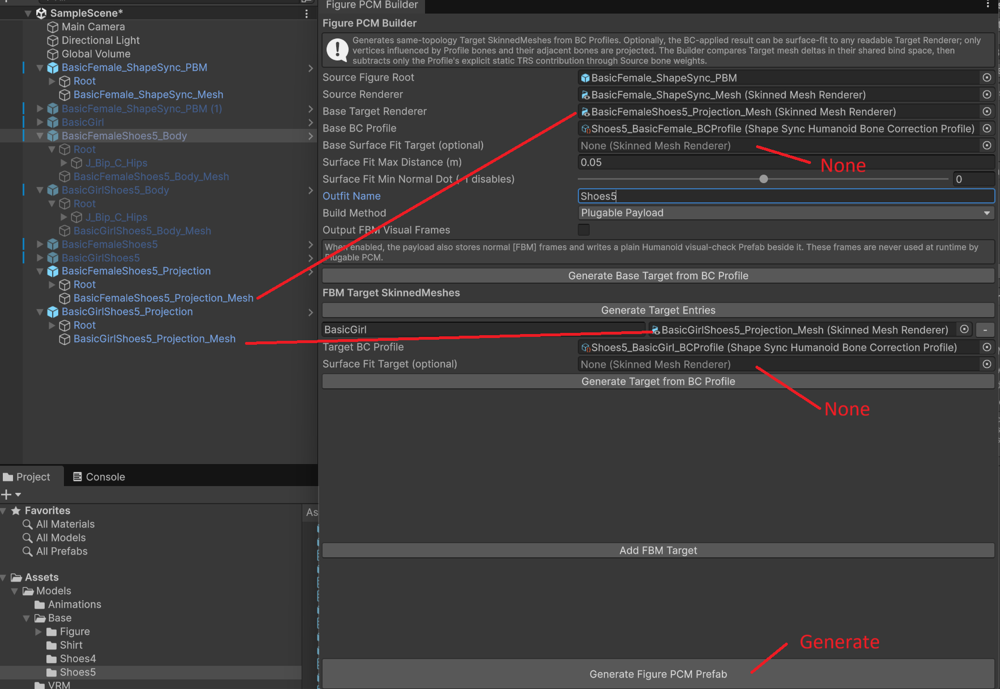
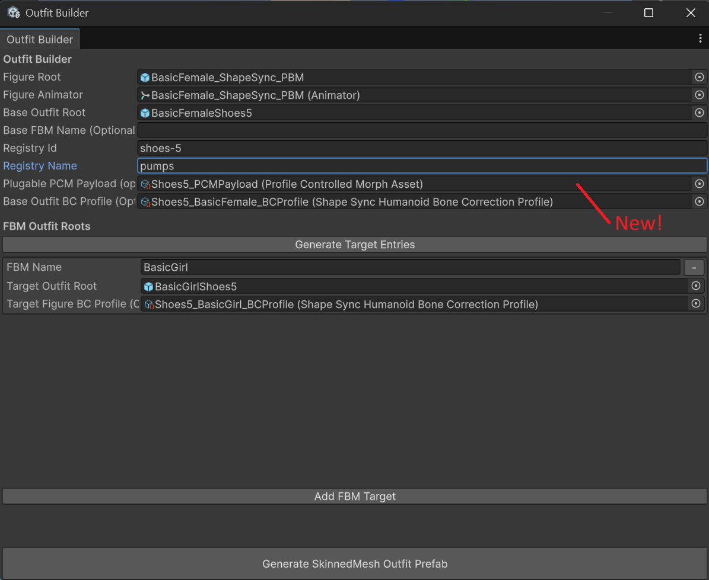
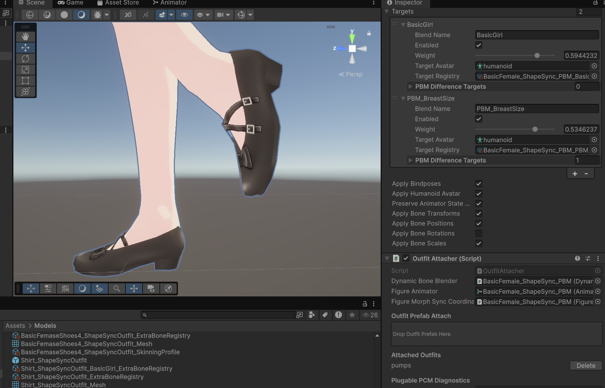

ShapeSync 高度な機能ガイド (advanced.html)
本ドキュメントは、Unity 向け 3D アバター着せ替え・体型変形ミドルウェア ShapeSync の応用・発展機能（PBM, BC Profile, PCM, Surface Fit）を解説する第 2 章ガイドです。tutorial.html で学んだ基本的な Figure 化や FBM 制御をベースに、高度な着せ替えワークフローをマスターします。
1. 概要と発展機能の全貌
基本の FBM (Full Body Morph) は Figure 全体の体型変化に合わせて衣装を追従変形させますが、局所的な部位変形や、厚底靴・ハイヒール等の特殊衣装に伴うボーンポーズ補正、メッシュ突き抜け防止を行うために ShapeSync では 3 つの高度な機能を提供しています。
これらの設定（BC Profile、PBM、PCM など）はすべてアタッチ時に ShapeSync の内部メカニズムによって全自動で Figure 側へ適用・同期 されます。
| 機能 | 紐づき先 | ツール / コンポーネント | 用途・効果 |
|---|---|---|---|
| Partial Body Morph (PBM) | Figure / Outfit 双方 | PBM Baker( Tools > zgock > ShapeSync > PBM Baker) |
胸部や腰部など、特定部位のみを選択的に変形させる部位別モーフを既存の Figure / Outfit に焼き込む。 |
| Bone Correction Profile (BC Profile) | Outfit 側 | BC Profile Builder( Tools > zgock > ShapeSync > BC Profile Builder) |
ハイヒールやブーツ着用時の「つま先立ち」など、衣装着用時に Figure 側の Humanoid ボーンポーズ/スケールを補正。 |
| Profile Controlled Morph (PCM) | Outfit 側 | Figure PCM Builder( Tools > zgock > ShapeSync > Figure PCM Builder) |
衣装着用時に Figure 側へ自動適用し、足の裏や腕などのメッシュ突き抜け（Clipping）を防止するモーフ。 |
| Surface Fit (表面投影) | PCM 生成オプション | Figure PCM Builder(Surface Fit タブ / オプション) |
装着ポーズと Figure のメッシュトポロジーが異なる場合に、表面投影によって形状をフィッティングさせた PCM Target を構築。 |
2. 部位別モーフ (Partial Body Morph: PBM) の組み込みと連動
PBM (Partial Body Morph) は、全体的な FBM（体型変更）とは独立して、胸部（BreastSize）などの局所的な部位変化を選択的に適用し、Figure と Outfit を連動変形させる機能です。Figure Builder / Outfit Builder などのビルドツールを通さず、エディタツール PBM Baker を使用して既存の Figure や Outfit に対して直接 PBM を焼き込み（ベイク）ます。
ステップ 1: PBM 用メッシュ素材の用意
PBM のベイクに必要な以下のメッシュ素材（いずれも Scene 上のオブジェクト）を用意します。
- Figure 用素材:
Source Figure / Outfit: 第一章で作成した既存の Figure オブジェクトSource Renderer: Figure のベース形状SkinnedMeshRendererBase PBM Renderer:BasicFemaleBreastSize(ベース FBM 状態での胸部調整メッシュ Renderer)Target Renderer:BasicGirlBreastSize(各 FBM ターゲット状態での胸部調整メッシュ Renderer)
- Outfit 用素材:
Source Figure / Outfit: 第一章で作成した既存の Outfit オブジェクトSource Renderer: Outfit のベース形状SkinnedMeshRendererBase PBM Renderer:BasicFemaleShirt2BreastSize(ベース FBM 状態での衣装胸部調整メッシュ Renderer)Target Renderer:BasicGirlBreastSize(各 FBM ターゲット状態での衣装胸部調整メッシュ Renderer)
ステップ 2: PBM Baker による Figure への PBM 焼き込み
- メニューバーから
Tools > zgock > ShapeSync > PBM Bakerを開きます。 - Mode:
Figureを選択します。 - Source Figure / Outfit: 第一章で作成した Scene 上の Figure オブジェクトを指定します。
- Source Renderer: Figure のベース形状
SkinnedMeshRendererを指定します。 - Base PBM Renderer: ベース FBM での PBM 形状
BasicFemaleBreastSizeのSkinnedMeshRendererを指定します。 - PBM Name:
"BreastSize"と入力します。 - FBM Target Renderers セクションの 「Generate Target Entries」 ボタンをクリックするか 「Add FBM Target」 ボタンをクリックします。
- 追加された項目の FBM Name に
BasicGirlと入力し、Target Renderer にBasicGirlBreastSizeのSkinnedMeshRendererを割り当てます。 - ウィンドウ下部の 「Bake PBM Output Prefab」 ボタンをクリックします。PBM (
BreastSize) が組み込まれた Figure Prefab が出力されます。
ステップ 3: PBM Baker による Outfit への PBM 焼き込み
- 再度
Tools > zgock > ShapeSync > PBM Bakerを開きます。 - Mode:
Outfitを選択します。 - Source Figure / Outfit: 第一章で作成した Scene 上の Outfit オブジェクトを指定します。
- Source Renderer: Outfit のベース形状
SkinnedMeshRendererを指定します。 - Base PBM Renderer: ベース FBM での衣装 PBM 形状
BasicFemaleShirt2BreastSizeのSkinnedMeshRendererを指定します。 - PBM Name: Figure 側と同一の
"BreastSize"と入力します。 - FBM Target Renderers セクションの 「Generate Target Entries」 または 「Add FBM Target」 ボタンをクリックします。
- FBM Name に
BasicGirlと入力し、Target Renderer に衣装 PBM 形状BasicGirlBreastSizeのSkinnedMeshRendererを割り当てます。 - ウィンドウ下部の 「Bake PBM Output Prefab」 ボタンをクリックします。PBM (
BreastSize) が組み込まれた Outfit Prefab が出力されます。

ステップ 4: シーンでの着用とリアルタイム PBM 変形検証
- シーン上に PBM を焼き込んだ Figure Prefab を配置し、Play モードで PBM 組み込み済み Outfit をアタッチ（着用）させます。
- Hierarchy 上で Figure を選択し、Inspector ウィンドウの
DynamicBoneBlender(DBB) コンポーネントを確認します。 - 項目増加の確認: DBB の Targets リスト内に
PBM_BreastSizeという新しい Target 項目が増加し、自動認識されていることを確認します。 - 変形検証: 追加された
PBM_BreastSizeの Weight スライダーを動かします。 - 達成条件:
PBM_BreastSizeスライダーの操作に追従して、Figure（素体）と Outfit（衣装）の胸部サイズが同期して動的に変形することを確認します。

3. 靴のアタッチとポーズのズレ：BC Profile (BCP) の導入
厚底靴や靴アセットの着せ替えを例に、ボーンポーズの補正 (BC Profile) がなぜ必要なのか、どのように作成・適用するのかを順を追って解説します。
ステップ 1: 靴 Prefab の作成と問題の発見
BasicFemale/BasicFemaleShoes1を Mesh Utility のMesh Separationタブで分解し、靴Shoes1Prefab を作成します。- シーン上で Figure に靴 Prefab をアタッチしてみます。
- 問題発生: 靴の位置や角度が Figure の足に対して大きくズレていることに気づきます。

ステップ 2: 原因の特定（ポーズのズレ）と BC Profile の役割
- 靴を作った時と同じ手順で
Mesh Separationを使い、靴用の身体メッシュを取り出してシーンに配置し、Figure の座標を揃えて比較してみます。 - 原因判明: 装着時の靴専用ポーズと Figure のデフォルト素体ポーズがそもそも異なっており、靴に合わせるためには Figure を「軽くつま先立ち」させるポーズ補正が必要であることがわかります。
- BC Profile の役割: この足の角度や高さを補正するために BC Profile (Bone Correction Profile) が必要となります。

ステップ 3: BC Profile Builder によるプロファイル作成
- 元の Base Figure は変更せず、Hierarchy 上で Base Figure を複製します。
- 複製した Base Figure 側の Hip の位置（分解した靴用の身体の Hip の Y Pos をコピー）および左右 Foot の X Rot を手動調整して、靴に合わせたつま先立ちの装着ポーズを作成します。
- メニューバーから
Tools > zgock > ShapeSync > BC Profile Builderを開きます。 - ウィンドウ内の参照フィールドを以下のように設定します：
- Base Figure Root: 元の Base Figure オブジェクトを指定します（未変更のもの）。
- Current Pose Figure Root: 手動ポーズ（つま先立ち）を付けた Base Figure の複製オブジェクトを指定します。
- 「Capture Current Pose as Profile」 ボタンをクリックします。
- ベースポーズとつま先立ちポーズの Humanoid ボーン差分（TRS）が自動キャプチャされ、
ShapeSyncHumanoidBoneCorrectionProfileアセット（BasicFemale_BCProfile）として保存されます。 - BasicGirl についても同様の手順（複製・ポーズ調整・キャプチャ）を行い、
BasicGirl_BCProfileを作成・保存します。

ステップ 4: Outfit Builder での BC Profile 設定・再作成と問題の発見
- メニューバーから
Tools > zgock > ShapeSync > Outfit Builderを開きます。 - 各フィールドを設定します：
- Figure Root: Figure Prefab のルート GameObject
- Figure Animator: Figure の
Animatorコンポーネント - Base Outfit Root: 分離抽出した Base 靴 Prefab のルート GameObject
- Registry Id:
shoes-1 - Registry Name:
Shoes1 - Base Outfit BC Profile (Optional): ステップ 3 で作成した
BasicFemale_BCProfileを指定
- FBM Outfit Roots セクションでターゲット (
BasicGirl) の項目を追加し、対応する BC Profile フィールドにBasicGirl_BCProfileを指定します。 - ウィンドウ下部の 「Generate SkinnedMesh Outfit Prefab」 ボタンをクリックし、BC Profile が組み込まれた靴 Prefab を再作成（出力）します。
- 新しい問題の発見（メッシュはみ出し）:
- シーンで Figure に新しく作成した靴 Prefab をアタッチしてみます。
- 今度は足の角度や位置はピッタリ合いますが、「足の裏や側面が靴からはみ出している（素体メッシュが貫通している）」 という新たな問題に気づきます。

4. メッシュはみ出し解消：PCM と Surface Fit (表面投影)
ステップ 1: PCM (Profile Controlled Morph) の必要性
- 第 3 章のステップ 4 で発見した「メッシュのはみ出し（貫通）」は、ボーン角度の補正 (BCP) だけでは解決できません。
- 靴装着ポーズの身体と Figure を詳細に比較すると、足の裏や側面を少し引っ込めた（凹ませた）形状になっていることがわかります。
- 衣服から素体が貫通するのを防ぐため、衣装着用時に Figure 側のメッシュ形状を動的に凹ませて補正する PCM (Profile Controlled Morph) が必要となります。
ステップ 2: Figure PCM Builder によるターゲット生成手順
Figure PCM Builder を用いた PCM Payload の構築は、以下の 2 段階（Two-Stage）手順 で行います。
- メニューバーから
Tools > zgock > ShapeSync > Figure PCM Builderを開きます。 - 基本フィールドを設定します：
- Source Figure Root: Figure のルート GameObject
- Source Renderer: Figure のベース形状
SkinnedMeshRenderer - Outfit Name:
Shoes1
1 段階目: 同トポロジー target Prefab の生成
BC Profile と必要な Surface Fit Target から、Base 用・FBM Target 用の同トポロジー target Prefab を生成する段階です。
- Base BC Profile に
BasicFemale_BCProfile、Base Surface Fit Target (optional) に靴装着ポーズの身体メッシュSkinnedMeshRendererを設定します。 - 「Generate Base Target from BC Profile」 ボタンをクリックし、生成された同トポロジー target Prefab（例:
BasicFemale_Shoes1_BaseTarget.prefab）を保存します。 - FBM Target SkinnedMeshes セクションで 「Add FBM Target」 をクリックし、FBM Name に
BasicGirl、Target BC Profile にBasicGirl_BCProfile、Surface Fit Target (optional) にBasicGirl側の靴装着ポーズ身体メッシュを指定します。 - 「Generate Target from BC Profile」 ボタンをクリックし、生成された同トポロジー target Prefab（例:
BasicGirl_Shoes1_Target.prefab）を保存します。

2 段階目: 生成済み target Prefab の指定と PCM Payload の出力
生成済み target Prefab の SkinnedMeshRenderer を Base Target Renderer / Target Renderer へ指定し、PCM Payload を生成する段階です。
- 1 段階目で生成した各 Prefab の
SkinnedMeshRendererを、Base Target Rendererおよび FBM Target エントリのTarget Rendererフィールドにそれぞれ設定します。 - ウィンドウ最下部の 「Generate Figure PCM Prefab」 ボタンをクリックします。
- 表面投影を反映した Plugable PCM Payload (
ProfileControlledMorphAsset) が正しく出力・保存されます。

ステップ 3: Outfit Builder での最終組み込みと動作検証
- メニューバーから
Tools > zgock > ShapeSync > Outfit Builderを開きます。 - 各フィールドを設定・確認します：
- Figure Root: Figure Prefab のルート GameObject
- Figure Animator: Figure の
Animatorコンポーネント - Base Outfit Root: 分離抽出した Base 靴 Prefab のルート GameObject
- Registry Id:
shoes-1 - Registry Name:
Shoes1 - Base Outfit BC Profile (Optional):
BasicFemale_BCProfile - Plugable PCM Payload (optional): ステップ 2 で生成した PCM Payload (
ProfileControlledMorphAsset) を指定
- FBM Outfit Roots セクションで
BasicGirlターゲットの参照と BC Profile (BasicGirl_BCProfile) が指定されていることを確認します。 - ウィンドウ下部の 「Generate SkinnedMesh Outfit Prefab」 ボタンをクリックし、完成版の靴 Prefab を出力します。

- 動作検証（実機確認の達成条件）:
- シーンで Figure に完成した靴 Prefab をアタッチします。
- 靴の角度や位置が正確に合っていること、および足の裏や側面のはみ出しが解消されてフィットしていることを確認します。

5. まとめ
ShapeSync の高度な機能を活用することで、単なる体型追従にとどまらず、特殊な靴・厚底アセットのポーズ補正 (BC Profile)、衣装着用時の素体突き抜け防止 (PCM)、トポロジーの異なるモデルへの面適応 (Surface Fit)、および部位別モーフ (PBM) を実現できます。
※ VRM 関連の高度な機能について
VRM 特有の揺れもの物理 (SpringBone) の自動再構築や VRM Expression (表情) の連動機能については、別の VRM Integration ガイド にて詳しく解説します。